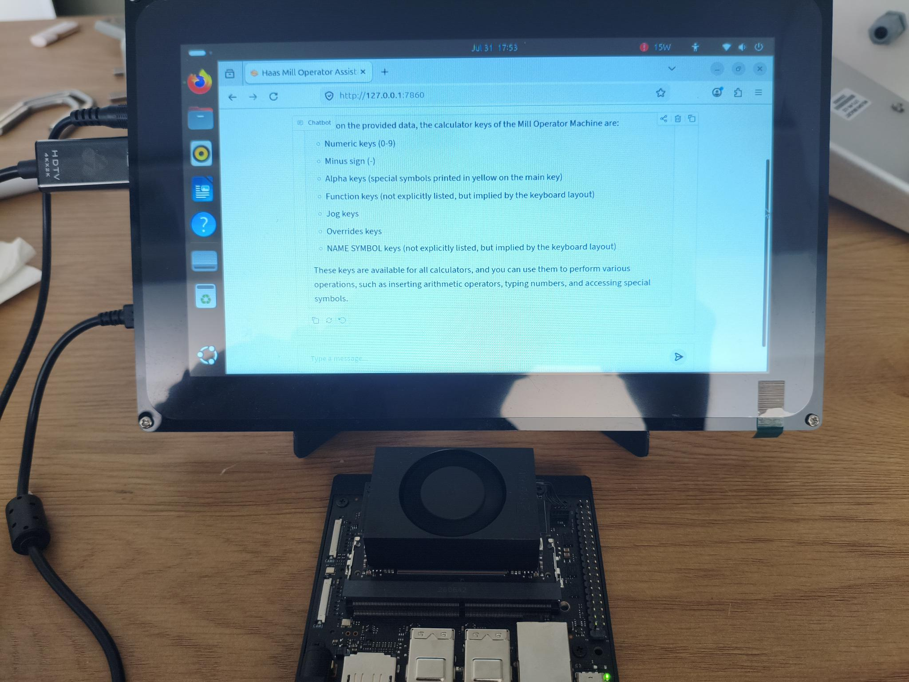
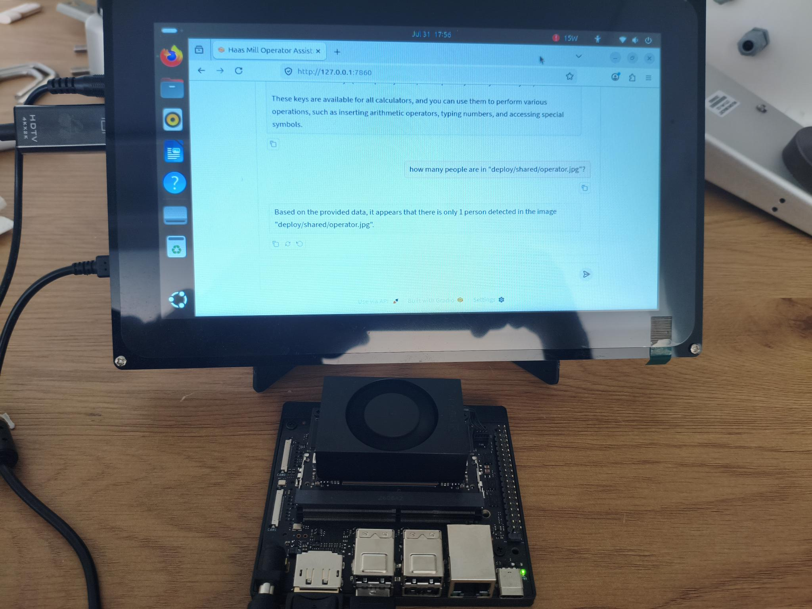

Measurement-Driven Sub-Network Selection for On-Premise Retrieval-Augmented Factory Agents
Supplementary answer-quality examples: per-question LLM-judge scores across compression pipeline stages, plus vision-tool and routing demonstrations.
Selection rule. Examples are not hand-picked: for each model, questions were sampled
deterministically at the 95, 75, 50, 25, 5th percentiles (badges) of that model's own per-question
judged-quality distribution (mean of faithfulness, answer relevancy, and context utilization), so the page includes
strong, typical, and weak answers. Scores are the per-question values from the paper's LLM-judge sessions
(Claude Opus 4.8, interleaved anonymized protocol). The three 3B systems were judged in one session on identical
questions and retrieved contexts, so their scores are directly comparable. The 1B examples come from a separate
300-question session, the one behind the paper's Table IV, which also judged the deployed 3B model, so there the
1B-to-3B gap is measured directly (9.3%); the 1B absolutes are not comparable to the 3B section. Retrieved contexts are truncated excerpts of the machine's operator
manual, quoted briefly for illustration.
1Same question across the 3B pipeline stages
Each card shows one question from the n=633 held-out set with the identical retrieval, answered by the
unpruned base model, the extracted rank-6 sub-network before adaptation, and the deployed rank-6 model after
retrieval-grounded distillation.
P95
What triggers the milling calculator to display the recommended power for the operation?
Retrieved context (truncated excerpt)
LEFT and RIGHT cursor arrow keys to choose from the available options. • wCalculated values appear highlighted in yellow when they are outside of the recommended range for the workpiece and tool material. Also, when all of the calculato…
Unpruned base 3B + RAGfaithfulness 0.90relevancy 1.00ctx. util. 1.00
Based on the provided data context, the milling calculator will display the recommended power for the operation when all of the calculator fields contain data (calculated or entered). This can happen in two scenarios:
1. When you have entered enough information into the calculator fields, it will automatically display the results in the relevant fields, which are marked with an asterisk (*). 2. When the calculator fields contain calculated values that fall outside of the recommended range for the workpiece and tool material, the calculated values will be highlighted in yellow to indicate that they are outside of the recommended range.
To view the recommended power for the operation, simply ensure that all the calculator fields have data entered, and the calculator will display the recommended power for the operation.
Extracted rank 6 (no Stage 2)faithfulness 0.70relevancy 0.50ctx. util. 0.60
The milling/turning calculator is a tool used to automatically calculate machining parameters based on given information. When you have entered enough information, the calculator displays results in the relevant fields marked with an asterisk (*).
The milling calculator triggers the display of the recommended power for the operation when all of the calculator fields contain data (calculated or entered). This is because the calculator automatically calculates and displays the relevant fields, marked with an asterisk (*), when you have entered enough information.
P75
How can I adjust the size of the zoom window?
Retrieved context (truncated excerpt)
6) Zoom Press F2 to display a rectangle (zoom window) that shows the area that the zoom operation will move to. Use PAGE DOWN to decrease the size of the zoom window (zoom in), and use PAGE UP to increase the size of the zoom window (zo…
Unpruned base 3B + RAGfaithfulness 0.95relevancy 0.95ctx. util. 0.95
To adjust the size of the zoom window, you can use the following methods:
- Press F2 to display a rectangle (zoom window) that shows the area that the zoom operation will move to. - Use the PAGE DOWN key to decrease the size of the zoom window (zoom in). - Use the PAGE UP key to increase the size of the zoom window (zoom out). - Use the cursor arrow keys to move the zoom window to the location you want to zoom. - Press ENTER to complete the zoom.
Additionally, you can also use the arrow keys to move the zoom window and press ENTER to finalize the zoom.
Extracted rank 6 (no Stage 2)faithfulness 0.90relevancy 0.85ctx. util. 0.85
To adjust the size of the zoom window, you can follow these steps:
1. Press F2 to display a rectangle (zoom window) that shows the area that the zoom operation will move to. 2. Use PAGE DOWN to decrease the size of the zoom window. 3. Enter to complete the zoom. 4. The control scales the tool path window to the zoom window. 5. Run the program again to display the tool path. 6. Press F2 and then HOME to expand the Tool Path window to cover the entire work area.
Note: If Setting 253 is ON, the tool diameter is shown as a thin line. If it is OFF, the tool diameter specified in the Tool Offsets Diameter Geometry table is used.
To adjust the size of the zoom window, you can use the following steps:
1. Press F2 to display a rectangle (zoom window) that shows the area that the zoom operation will move to. 2. Use the PAGE DOWN key to decrease the size of the zoom window (zoom in). 3. Use the PAGE UP key to increase the size of the zoom window (zoom out). 4. Use the cursor arrow keys to move the zoom window to the location you want to zoom. 5. Press ENTER to complete the zoom.
Additionally, you can also use the HOME key to expand the Tool Path window to cover the entire work area.
P50
What mode do you run programs in?
Retrieved context (truncated excerpt)
Highlight a program in the memory directory, then press SELECT PROGRAM to make the highlighted program active. The active program has an asterisk (*) in the far-right column in the file display. It is the program that runs when you press…
Unpruned base 3B + RAGfaithfulness 0.90relevancy 1.00ctx. util. 0.90
You're looking to know the mode in which you run programs. According to the provided data, the mode you run programs in is called "Operation:MEM" mode. This mode is also referred to as "Memory" mode. In this mode, you can run programs, and the active program is protected from deletion while it's running. Additionally, you can use the "CYCLE START" command to start the active program, and it will run when you press the "CYCLE START" button.
Extracted rank 6 (no Stage 2)faithfulness 0.85relevancy 0.50ctx. util. 0.70
Sure, I can help you understand the context and provide a helpful response.
The tool returned the following data context:
- Highlight a program in the memory directory, then press SELECT PROGRAM to make the highlighted program active. - The active program has an asterisk (*) in the far-right column in the file display. - It is the program that runs when you press CYCLE START in OPERATION:MEM mode. - The program is also protected from deletion while it is active.
So, to summarize, you can highlight a program in the memory directory and then press SELECT PROGRAM to make it active. The active program is protected from deletion and runs when you press CYCLE START in MEM mode.
To run programs in the Operation:MEM mode, you can select a program in the memory directory and press the "SELECT PROGRAM" button. This will make the highlighted program active, which is indicated by an asterisk (*) in the far-right column of the file display. The program is also protected from deletion while it is active.
P25
What types of activities should a machine operator not perform on their own?
Retrieved context (truncated excerpt)
may operate this equipment. You must always act in accordance with the Operator’s manual, safety decals, safety procedures, and instructions for safe machine operation. Untrained personnel present a hazard to themselves and the machine …
Unpruned base 3B + RAGfaithfulness 0.80relevancy 0.85ctx. util. 0.85
Based on the provided data, there are several activities that a machine operator should not perform on their own. These include:
- Operating the machine without proper training and understanding of the Operator's manual, safety decals, and safety procedures. - Using the machine without reading all warnings, cautions, and instructions first. - Installing or operating the machine without everyone involved being familiar with the operation and safety instructions. - Performing maintenance or repairs on the machine without factory-trained personnel. - Operating the machine without proper eye and ear protection. - Operating the machine without proper gloves to handle processed material and clean the machine. - Cleaning the machine without proper training and understanding of the machine's operation and safety instructions.
It's also important to note that some tasks, such as cutting tools, workholding, workpiece, and coolant, are beyond the control of the machine manufacturer and are the responsibility of the user to address.
Additionally, the data highlights the importance of following proper safety protocols, such as keeping the machine doors open
Extracted rank 6 (no Stage 2)faithfulness 0.75relevancy 0.60ctx. util. 0.60
To summarize, a machine operator should not perform any activities that put themselves or others at risk, such as operating the machine until they have read all warnings, cautions, and instructions provided with the machine. They should always use appropriate eye and ear protection, gloves, and follow safety procedures.
As a machine operator, there are certain activities that you should not perform on your own. These include:
1. Operating the machine without proper training and understanding of the safety procedures and instructions. 2. Using personal protective equipment (PPE) or gloves to protect yourself from potential hazards. 3. Handling sharp edges, heavy lifting considerations, and other potential hazards associated with the machine. 4. Cleaning the machine during normal use, which is a normal operator function. 5. Repairing the machine when it's not operating correctly, which requires service by factory-trained personnel.
It's essential to follow the guidelines and instructions provided with the machine, as well as the Operator's manual, safety decals, and safety procedures. The ultimate responsibility for safety rests with the machine owner and the individuals who work with the machine.
P5
What is the minimum software version required to find the last error in a program?
Retrieved context (truncated excerpt)
the first match. NOTE: Putting your search term within parentheses (), will search only within comment lines. Starting in software version 100.19.000.1100 the control can find the last error in a program. Press SHIFT + F4 to display the l…
Unpruned base 3B + RAGfaithfulness 0.95relevancy 1.00ctx. util. 0.90
To find the last error in a program, you need to have a software version of at least 100.19.000.1100. This version allows the control to detect and identify the last error in a program.
Additionally, you can use the "Locate the Last Program Error" feature to find the last error. This feature can be accessed by pressing SHIFT + F4, which will display the last line of G-code that generated the error.
Extracted rank 6 (no Stage 2)faithfulness 1.00relevancy 1.00ctx. util. 0.90
The minimum software version required to find the last error in a program is software version 100.19.000.1100.
To find the last error in a program, you can use the following steps:
1. Press SHIFT + F4 to display the last line of G-code that generated the error. 2. Locate the Last Program Error by searching for the error code in the program. 3. The error code is stored in the variable #6198. 4. To conditionally run program code for a specific control version, you can use the following code: - IF (#6198 EQ 1000000) GOTO5 - (Non-NGC code) - GOTO6 - N5 (NGC code) - N6 M30
This will allow you to test the control version and then conditionally run program code for that control version. If the value stored in #6198 is equal to 1000000, the program will end.
2Deployed 1B rank 5 (Arduino UNO Q tier)
Examples from the 300-question judging session behind the paper's Table IV.
P95
How do I complete the copy operation?
Retrieved context (truncated excerpt)
To copy a single program, highlight it in the device manager program list and press ENTER to assign a check mark. To copy multiple programs, check-mark all the programs you want to copy. Press F2 to start the copy operation. The Select …
To complete the copy operation, follow these steps:
1. First, highlight the program(s) you want to copy in the device manager program list. 2. Press ENTER to assign a check mark to each program. 3. To copy multiple programs, check-mark all the programs you want to copy. 4. Press F2 to start the copy operation. 5. The Select Device popup will appear, allowing you to select the destination directory. 6. Use the cursor arrow keys to select the destination directory. 7. Press ENTER to complete the copy operation, or press CANCEL to return to the device manager.
Note that a check-mark selection only marks the file for further operation, but it does not make the program active.
P75
How do I provide feedback or contact customer service regarding the Operator’s Manual?
Retrieved context (truncated excerpt)
No. 96 Yi Wei Road 67, Waigaoqiao FTZ Shanghai 200131 P.R.C. email: customerservice@HaasCNC.com Customer Feedback If you have concerns or questions regarding this Operator’s Manual, please contact us on our website, www.HaasCNC. com. Use t…
To provide feedback or contact customer service regarding the Operator's Manual, you can follow these steps:
1. If you have concerns or questions about the manual, you can contact Haas Automation's Customer Service Advocate directly. You can do this by visiting the website at www.HaasCNC.com and using the "Contact Us" link. 2. If your concerns are not resolved to your satisfaction, and you have discussed them with a member of the HFO's management, the General Manager, or the HFO's owner, you can contact them directly. However, please note that they may not be able to resolve your concerns as quickly as possible. 3. If you have any questions or concerns about the manual, you can also contact Haas Automation's Customer Service Advocate at 805-988-6980. When you call, please have the following information available: - Your company name, address, and phone number - The machine model and serial number - The nature of your concern
By following these steps, you should be able to get the help and support you need to resolve your concerns regarding the Operator's Manual.
P50
What happens to machine functions when the door is open?
Retrieved context (truncated excerpt)
machine behavior is dependent on whether the doors are opened or closed. The following charts summarize the modes and allowed functions. Note: All these conditions follow assuming that the door is open and stays open before, during and t…
When the door is open, the machine functions are affected by the door's state. Here's a summary of the key points:
- If the door is open, some machine functions are unavailable. - When the door is open, setup mode is automatically activated, allowing a skilled machinist more access to the machine. - In setup mode, the enclosure doors are locked closed during CNC program execution, spindle rotation, or axis movement. - When the door is open, the machine's behavior is dependent on whether the doors are open or closed, and some functions are unavailable.
To summarize, the door's state affects the machine's behavior, and it's essential to follow the specific rules and guidelines for each mode. It's also crucial to note that attempting to override safety features can make the machine unsafe and void the warranty.
P25
How do I set the Z-Axis to a work offset of approximately 1 inch?
Retrieved context (truncated excerpt)
table, make sure the tilt axis is at 0 degrees (A0° or B0°). 1 Setting Tool Offset. With the Z Axis at its home position, Tool Length Offset is measured from the tip of the tool [1] to the top of the part [2]. • Load the tool in the spind…
To set the Z-Axis to a work offset of approximately 1 inch, follow these steps:
1. Load the tool in the spindle and press the HANDLE JOG [F] to set the Z-Axis to its home position. 2. Navigate to the OFFSET>WORK [C] tab and press the DOWN cursor key [H] to activate the page. 3. Navigate to the G54 X Axis location and press the F4 key to toggle between Tool offsets and Work offsets. 4. Navigate to the G54 Z Axis location and press the NEXT TOOL [B] key to set the Z-Axis to a work offset of 1 inch. 5. Repeat the offset process for each tool, accepting the value in the Z-Axis column.
Note: Make sure the tilt axis is at 0 degrees (A0° or B0°) before starting the offset process.
P5
Is it safe to operate the machine unmonitored?
Retrieved context (truncated excerpt)
safe to operate unmonitored. As it is the shop owner’s responsibility to set up the machine safely and use best practice machining techniques, it is also the owner’s responsibility to manage the progress of these methods. You must monito…
Based on the provided data, it appears that the machine is safe to operate unmonitored. The tool was executed and returned the exact data context that states, "safe to operate unmonitored." This suggests that the machine is functioning properly and is not posing any hazards or risks.
3Vision tool and routing
The assistant embeds each query once (BGE-base-en-v1.5); a logistic router on that
embedding sends it either to manual retrieval, which reuses the embedding, or to a
person-detection vision tool, and the deployed model then answers from the tool output
in a single generative pass. The router scores 40/40 on the original routing set and
298/301 on an expanded set of paraphrased vision requests, image-path variants, and hard
negatives, recovering all 150 image paths. An earlier version routed with a
grammar-constrained JSON call by the compact model itself (269/301 for the 3B core,
247/301 for the 1B core); the screenshots and the vision exchange below were recorded
with that earlier version, and the answering step is unchanged.

Manual question answered through the retrieval tool, on the Jetson tier.

Person-count query answered through the vision tool.
Vision-tool input image (deploy/shared/operator.jpg): the frame the person detector analyzes for the query below.
Vision exchange: “how many people are in ‘deploy/shared/operator.jpg’?” →
“Based on the provided data, it appears that there is only 1 person detected in the image
‘deploy/shared/operator.jpg’.” (off-the-shelf person detector; reported as
functional, not accuracy-benchmarked)